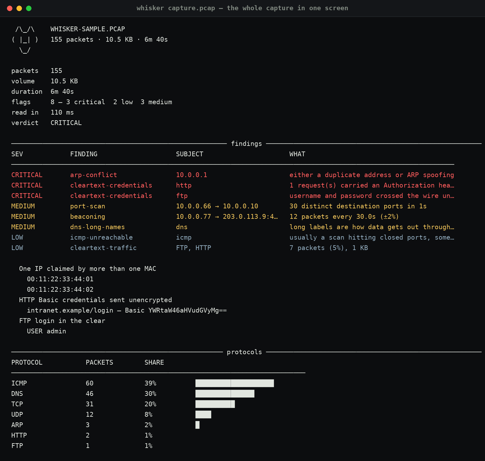
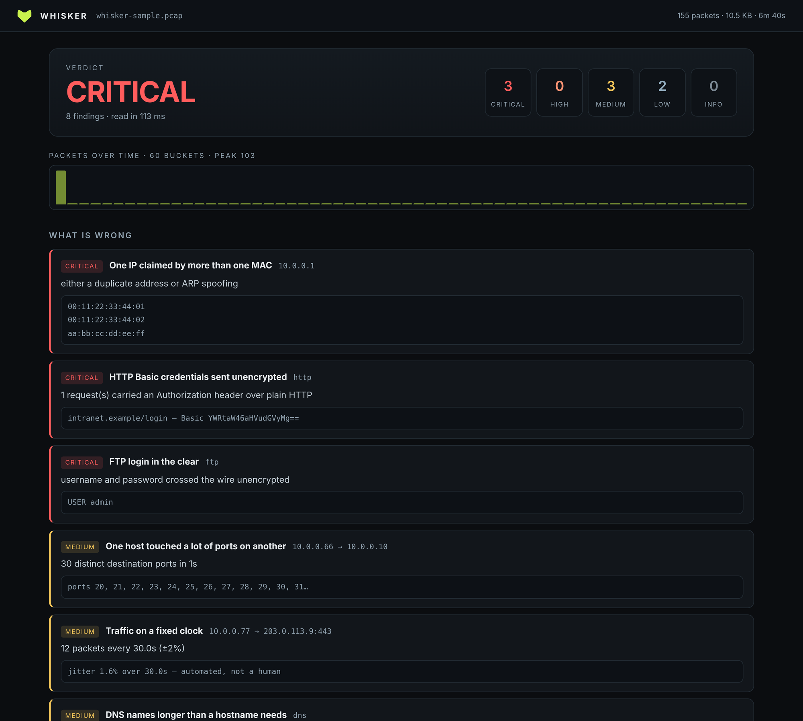

01The wrong tool, used well
I like Wireshark and I open it constantly. But the shape of it is a tree: one packet, thirteen hundred fields, and you scroll. The questions I actually get asked are aggregate — did anything leave is not a property of a packet, it is a property of two hours of packets. So the split is:
- tshark dissects. Twenty years of protocol parsers, maintained by people who know the RFCs. I am not rewriting them, and a tool that reimplements DNS badly is a tool that lies.
- Whisker counts. One streaming pass over the fields tshark extracts, counters instead of storage, then a verdict with evidence attached.

02One pass, bounded memory
Nothing is kept per packet. What is kept: counters, at most 256 timestamps per flow (that is all the beacon maths needs), at most 20,000 flows, and a bucketed histogram built as the packets arrive. A 2 GB capture costs about the same memory as a 2 MB one, and the wall clock is almost entirely tshark's — the counting itself is a few milliseconds.
03What it looks for, and why
Eight things, each with the threshold written down in one file so a report can quote it instead of producing a number out of nowhere:
critical arp-conflict one IP claimed by two or more MACs critical cleartext-credentials HTTP Basic auth, or FTP USER/PASS medium port-scan 20+ distinct ports from one source (100+ upgrades it) medium beaconing 8+ packets on a fixed interval, jitter under 18% medium dns-long-names labels over 40 characters medium dns-volume 200+ distinct names from one host low cleartext-traffic protocols with no encryption, weighted by share low icmp-unreachable 50+ unreachables — usually a scan
The beacon one is the reason I built this. Fixed-interval traffic is what malware looks like and also what every monitoring agent looks like, so the finding says "look at this", never "this is malicious" — and it reports the jitter, so you can see how confident it is.
04The bug that taught me the design
My first version flagged "cleartext protocols" by looking at which ports appeared. On the test capture it reported FTP, HTTP, SMTP and Telnet — because a port scan had touched 21, 23 and 25. Nobody sent one byte of mail. The fix is small and important: a protocol only counts when tshark dissected an application layer on that port, not when something knocked on the door.
There is a test for exactly that now, and its name is the sentence:
test_cleartext_names_real_protocols_only.
05The same analysis, in a browser

whisker web capture.pcap. Same data, same order, no packet tree.
The page is server-rendered from the same object the CLI prints, with a client-side
filter over the conversation table and a JSON endpoint at
/api/analysis for anything that wants to run downstream.
The bar chart at the top is the thing that pays for itself: a scan is a spike,
exfiltration is a long plateau, a beacon is a picket fence.
06Testing a detector without a network
Live capture needs root and depends on traffic happening, so the tests synthesise the capture instead — with scapy, into a temp file, deterministically:
- one capture with everything in it: an ARP spoof, HTTP Basic auth, an FTP login, a 30-port scan, a beacon with 30s ± jitter, a long DNS label, an ICMP flood, and background keepalives so the timeline has a shape;
- one capture with nothing in it: a normal ARP pair, five DNS lookups, a TLS session. That one must produce zero findings.
A detector that fires on clean traffic is worse than no detector, so the quiet capture is a test rather than a nice-to-have. Forty tests, no network access, runs in two seconds.
07What it does not do
- No live capture. It needs root or a setcap'd dumpcap, and
a tool that quietly asks for root is a tool that gets run wrong. Capture with
dumpcap -w out.pcap, then read it. - No stream reassembly beyond what tshark gives. A payload split across segments is only as visible as the dissector makes it.
- No payload inspection. No YARA, no signature matching, no malware call. It describes traffic; it does not judge files.
- Passwords stay masked. The FTP finding records
USER adminandPASS ********. A report that prints credentials is a report that leaks them.
github.com/Noxwer-beep/whisker
— pip install "whisker[ui]", then
whisker your-capture.pcap. It sits next to
Vantage, Bastet and
Warden in the same lab.